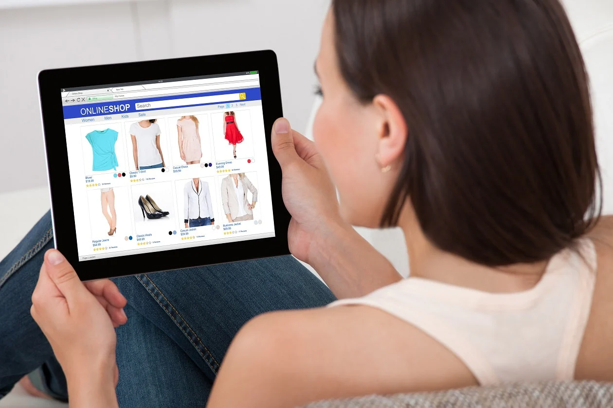

Shopp'd
Apr - May 2024
Python | JS | HTML | CSS
Shopp'd is a straightforward web application designed to streamline the clothes shopping experience.
Users can upload images of clothing items they desire, and our platform utilizes web scraping technology to search select luxury brands for similar clothing in real-time.
IDE: VSCode
Framework: Flask
Libraries: PyTorch, Firebase, Beautiful Soup, etc.

Spotify UnWrapped
Mar - Apr 2024
Java
Spotify UnWrapped is an Android app that taps into your Spotify account to provide a personalized Spotify Wrapped summary.
Unlike the traditional Spotify Wrapped, this app offers the convenience of generating your Wrapped summary anytime throughout the year.
Moreover, it saves your Wrapped summary for future viewing, ensuring you can revisit it at any time.
IDE: Android Studio
Libraries: Firebase, Picasso, StoryViewer, etc.
Others: NoSQL, XML
Covid Tracker
Jan 2023
Python
This Python program utilizes data sheets from The New York Times to create visual representations of COVID cases across different counties from 2020 to 2022.
It provides users with a simple yet effective tool to track and analyze COVID trends.
IDE: PyCharm
Libraries: Matplot
Scheduling App
Jan - Feb 2024
Java
This straightforward Android app helps users manage their school schedules with ease.
It features a school-friendly format that allows students to track their assignments and tasks effectively.
IDE: Android Studio
Other: XML